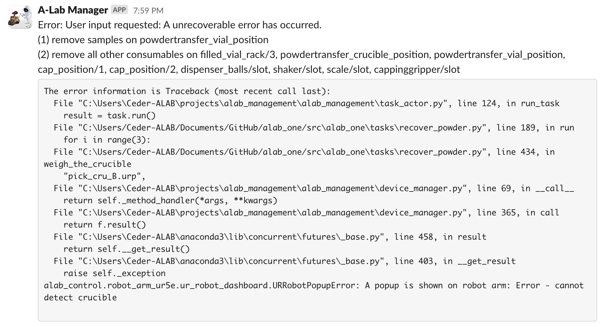

Defining tasks#
Task represents the smallest unit of operation in alabos. A task can take in multiple samples, request different resources,
execute a series of operations, and save results. Each task can also have a set of parameters that can be used to configure
the task behavior. To define a task, we need to inherit the BaseTask class
and implement all the necessary methods to define the task behavior.
BaseTask serves two roles in alabos. First, it is used as a data object to compose the experiment during submission.
Second, it is used as a base class to define a task with a specific behavior. In AlabOS, multiple APIs are provided to
help you write a task.
Task parameters#
To define a task, first thing you will need to do is to define the input parameters. To do you, you can override the
__init__ method in the inherited class. The __init__ method should take in all the necessary parameters to define the
task behavior.
For example, for the heating task, you want to define the ramping temperature rate, the target temperautre, and the duration.
from alab_management import BaseTask
class Heating(BaseTask):
def __init__(self, temperature_C, duration_min, ramping_rate_C_permin = 5, **kwargs):
super().__init__(**kwargs)
self.temperature = temperature_C
self.duration = duration_min
self.ramping_rate = ramping_rate_C_permin
You can refer to these parameters later for validation and task logic.
Parameter validation#
AlabOS provides optional support for validating the input parameters. You can define a validation function to check the input parameters. The validation function should return a boolean value to indicate whether the input data is valid.
For example, for the Heating task, you would like to check whether there are less than 8 samples
(less than the number of slots in the furnace), as well as whether the temperature is within
100°C - 1100°C range.
from alab_management import BaseTask
class Heating(BaseTask):
def __init__(self, temperature_C, duration_min, ramping_rate_C_permin = 5, **kwargs):
super().__init__(**kwargs)
self.temperature = temperature_C
self.duration = duration_min
self.ramping_rate = ramping_rate_C_permin
def validate(self):
# check the input sample
if len(self.samples) > 8:
self.set_message("The number of samples should be less than 8.")
return False
# check the temperature
if not 100 <= self.temperature <= 1100:
self.set_message("The temperature should be within 100 - 1100 °C.")
return False
return True
The validation function will be called before the task is submitted to the system, as well as before the task is run, to ensure the input data is valid.
Run method#
Each BaseTask class should implement the run method to define the task behavior. The run method is the entry point
of the task logic execution. In each task, there is a helper class named labview that provides a set of APIs to help you
interact with the system. The labview object is an instance of the LabView class.
Samples under the task#
For run method, apart from the parameters defined in the __init__ method, you can also access self.samples which
specifies the name of the samples that are passed in the task. It is done by AlabOS at the creation of the task. You can
refer to the samples at any time in the run method
To get/update the information of the sample, you can use the following methods:
BaseTask.labview.get_sample: this method is used to get the information about one sample. The sample is identified by the sample id or the sample name (disambiguate from other same-name samples by task_id). A sample data class will be returned asSampleobject.BaseTask.labview.move_sample: since alabos uses a position-based sample tracking system, this method is used to update the position of the sample. The sample is identified by the sample id or the sample name (disambiguate from other same-name samples by task_id). The new position is specified by the new sample position name. If the sample position is set toNone, the sample is considered to be out of the lab.BaseTask.labview.update_sample_metadata: this method is used to update the metadata of the sample. The new metadata is specified by a dictionary.
For example, you would like to get the information about a sample named sample_1, move it to a new position named
new_position, and update the mass information of the sample. You can do it like this:
from alab_management import BaseTask
class MyTask(BaseTask):
def run(self):
...
# each task has a list of samples that are passed in
# they are sample name so we will want to get the sample object
sample = self.labview.get_sample(self.samples[0])
# you can get the position of the sample
sample_position = sample.position
# you can get the metadata of the sample
self.labview.move_sample("sample_1", "new_position")
# you can update the metadata of the sample
self.labview.update_sample_metadata("sample_1", {"mass": {"value": 2.59434, "unit": "g"}})
Requesting resources#
In alabos, a ownership model is used to manage the resources. The resources include device and sample position where the task can use to perform operations and place samples. Before doing any operations in the autonomous lab, one task has to request the resources it needs so that the system knows the resources are occupied and will not be used by other tasks. In this way, we can minimize the conflict between tasks.
The resource requesting API is called BaseTask.labview.request_resources in alabos. This method is used to
request a list of resources which is the most frequently used API when defining a task. To automate the resource release
when the resource is no longer needed, the request_resources method is used as a context manager. The resources will be
released automatically when the context manager exits.
resource_request method receive a dictionary as the input. It has the following format:
# you can request multiple devices in one request
with BaseTask.labview.request_resources({
# if the key is a device type, the system will find one available device of the type
DeviceType: {
# in the dict, you can specify the quantity of sample positions under the device
# you want to use you can request multiple sample positions under one device
"<sample_position_name>": QUANTITY,
"<another_sample_position_name>": QUANTITY
},
# you can also specify the device name to request a specific device if the
# sample position is not specified, the system will only request the device
"DeviceName": {},
# for the sample positions that do not belong to any device,
# you can request them by setting the key to None.
None: {
"<standalone_sample_position_name>": QUANTITY
}
}) as (devices, sample_positions):
# do actual operations here with the devices and sample_positions
pass
Note
Currently, in one request, you can only request one device of a specific type. If you need to request multiple devices of the same type, you need to make multiple requests.
Once requested, the device returned will have the same methods as you define in the
inherited BaseDevice class. The sample_positions returned will be the name of
the assigned sample positions. For example, you would like to request a BoxFurnace defined
in the previous section. The furnace has eight sample positions under
name slot as well as method called run_program. There are also some standalone sample
positions named crucible_buffer. You can request the furnace and the standalone sample
positions like this:
from alab_management import BaseTask
from alabos_project.devices.box_furnace import BoxFurnace
class Heating(BaseTask):
def run(self):
...
with not self.labview.request_resources({
BoxFurnace: {
"slot": 8
},
None: {
"furnace_table": 2
}
}) as (devices, sample_positions):
# the furnace object you can call `run_program` method to run the program
# since only the device type is specified, the system will find one available device
# for here, it can be "box_2"
furnace = devices[BoxFurnace]
# the furnace slots are a list of sample positions.
# You can get it by query the dict with requested
# "DeviceType" and "sample_position_name".
# For here, it should look like:
# ["box_2/slot_1", "box_2/slot_2", ..., "box_2/slot_8"]
furnace_slots = sample_positions[BoxFurnace]["slot"]
# Even only requesting one standalone sample position, the system
# will return a list of sample positions with one element
# You can get the standalone sample position by querying the dict with None key.
furnace_table = sample_positions[None]["crucible_buffer"]
furnace.run_program(...)
Warning
Although the device has the same methods as the BaseDevice class,
the method decorated by @property will not be available in the device object since
the device object is a RPC proxy object that forwards the method call to the actual device.
Result storage#
At the end of the run method, the task should return a BSON serializable dictionary that contains the results of the task.
For example, you would like to define a task that takes in a sample, heats it up, and returns the temperature of the sample.
from alab_management import BaseTask
from alabos_project.devices.box_furnace import BoxFurnace
class Heating(BaseTask):
def run(self):
# request the furnace
with self.labview.request_resources({
BoxFurnace: {
"slot": 1
}
}) as (devices, sample_positions):
furnace = devices[BoxFurnace]
furnace_slot = sample_positions[BoxFurnace]["slot"][0]
# run the furnace
furnace.run_program(...)
# get the temperature log of the sample
temperatures = furnace.get_temperature_log(furnace_slot)
# return the result
return {"temperatures": temperatures}
Large file storage#
Considering the size limit of each MongoDB document (< 16MB), it is not recommended to store large files in the result.
Instead, we provide a class called LargeResult to store the large file in GridFS in MongoDB.
For example, when dealing with tasks that can generate very large files, you should store them directly in GridFS to ensure consistency and avoid querying issues. Here’s how you can do it:
from alab_management import BaseTask, LargeResult
from alabos_project.devices.box_furnace import BoxFurnace
class Heating(BaseTask):
def run(self):
# request the furnace
with self.labview.request_resources({
BoxFurnace: {
"slot": 1
}
}) as (devices, sample_positions):
furnace = devices[BoxFurnace]
furnace_slot = sample_positions[BoxFurnace]["slot"][0]
# run the furnace
furnace.run_program(...)
# get the temperature log of the sample
# this can be large if the temperature is recorded frequently (e.g., every 0.1 second)
temperatures = furnace.get_temperature_log(furnace_slot, frequency=0.1)
large_result = LargeResult.from_file_like_data(temperatures)
# you can also store the large file in the result
with open(r"large_file.txt", "w") as f:
f.write("This is a large file.")
large_file = LargeResult.from_local_file("large_file.txt")
# return the result
return {"temperatures": temperatures, "large_result": large_result, "large_file": large_file}
Validate the output#
AlabOS also provides optional support for validating the result output with pydantic library. To enable the validation,
you can override the BaseTask.result_specification method to return a pydantic model that specifies the structure of the
result output.
For example, for the Heating task, you would like to validate the result output to ensure that the result contains a list
of temperatures.
from pydantic import BaseModel
from alab_management import BaseTask
class Heating(BaseTask):
def run(self):
...
return {"temperatures": [1.0, 2.0, 3.0]}
@property
def result_specification(self):
class Result(BaseModel):
temperatures: list[float]
return Result
Once defined, the model will be used when saving the result to the database. If the result does not match the model, a warning will be printed to the console to notify the lab manager.
Set dashboard message#
BaseTask.set_message / BaseTask.get_message: these methods are used to set and get the message of the task. The message is
a string that will be displayed in the dashboard to show the status of the task.
Run subtask#
BaseTask.run_subtask: in alabos, a task can initiate another BaseTask as a subtask. All the requested resources are
shared between the parent task and the subtask.
For example, you would like to run a Moving subtask to move the sample into the furnace before heating it up.
from alab_management import BaseTask
from .moving import Moving
from alabos_project.devices.box_furnace import BoxFurnace
class Heating(BaseTask):
def run(self):
# request the furnace
with self.labview.request_resources({
BoxFurnace: {
"slot": 1
}
}) as (devices, sample_positions):
# run the moving subtask
for sample, position in zip(self.samples, sample_positions[BoxFurnace]["slot"]):
self.run_subtask(Moving, sample=sample, destination=position)
furnace = devices[BoxFurnace]
furnace_slot = sample_positions[BoxFurnace]["slot"][0]
# run the furnace
furnace.run_program(...)
# get the temperature log of the sample
temperatures = furnace.get_temperature_log(furnace_slot)
# return the result
return {"temperatures": temperatures}
Error handling#
In an autonomous lab, it is common to have unexpected errors during the task execution. To process errors, alabos
uses Python’s standard error handling mechanism. You can use the try and except block to catch the error and
handle it.
For example, you would like to catch the error when the furnace is not connected
(indicated by FurnaceNotConnectedError). You can
catch the error and initiate a user_input to ask the user to check the connection.
from alab_management import BaseTask
from alabos_project.devices.box_furnace import BoxFurnace
class FurnaceNotConnectedError(Exception):
pass
class Heating(BaseTask):
def run(self):
with self.labview.request_resources({
BoxFurnace: {
"slot": 1
}
}) as (devices, sample_positions):
furnace = devices[BoxFurnace]
while True: # keep trying until the furnace is connected
try:
furnace.run_program(...)
except FurnaceNotConnectedError:
# initiate a user request to ask the user to check the connection
response = self.labview.request_user_input(
prompt=f"Please check the connection of the furnace {furnace.name}.",
options=["Retry", "Abort"]
)
# if the user chooses to retry, rerun the task
if response == "Abort":
raise
Unhandled error#
By default, if there is an unhandled error in the task, the task will be marked as ERROR.
alabos will take charge of handling the cleaning up and a user_input will be made to
ask the user to remove all the samples belong to the task outside the lab. Once the user confirm the
removal, all the resources will be released so that other tasks can use them.
The user input looks like this:
Mocking#
You can also mock a task using the same decorator as described in the device definition.
This is useful when you want to skip some waiting functions like time.sleep.
Register the task#
After defining the task, you need to register the task by calling add_task method to make it available in the system.
You can call the add_task method in the __init__.py file of the task package to register the task.
from alab_management import add_task
from .tasks.heating import Heating
add_task(Heating)
Lifecycle of a task#
Although the task is defined in the BaseTask class and will be run as an BaseTask instance.
It is worth noting that in the most of the time the task will live in the database with
the input parameters and the results. Only when the task is running, it will live in the
Python instance.
The lifecycle of a task is shown in the following diagram:
There are different status of the tasks in the lifecycle. When the task is started to
run, a TaskActor will be created to run the task.
This is built upon dramatiq to run the task in a separate process.
See also
The task status is defined in a enum class called TaskStatus.
There are more details about the meaning of each status in the class.
What’s next#
After finishing defining all the devices and tasks, we can now start to launch the alabos system and submit the tasks to the system.